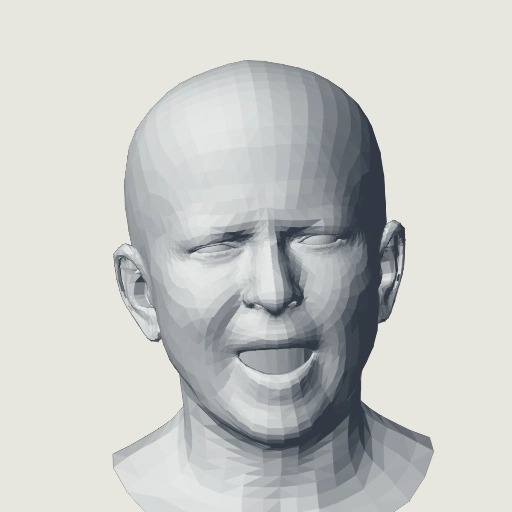
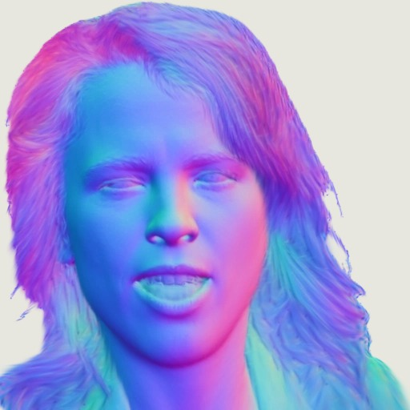
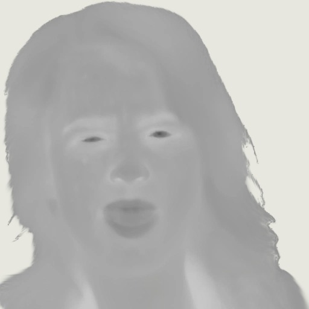
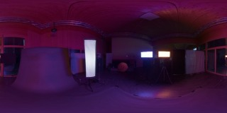
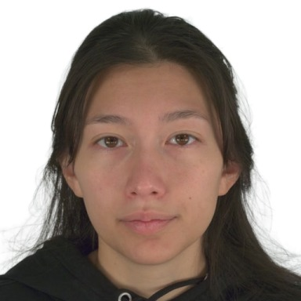
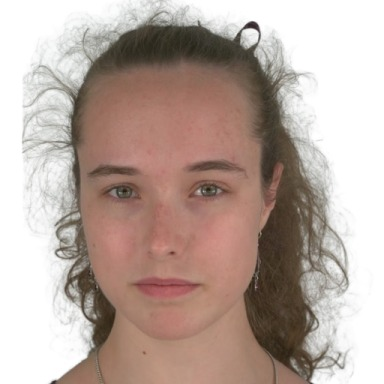
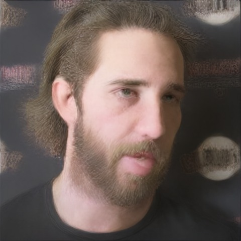
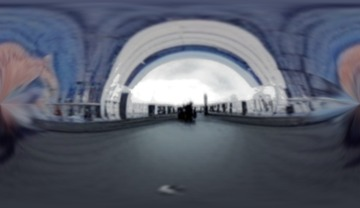

Animate and relight a single portrait
3D Intrinsic Gaussian Head Proxy
From a single reference portrait, our feed-forward network reconstructs a 3D intrinsic Gaussian head proxy in canonical space. Driving FLAME parameters deform the Gaussians, which are rasterized into per-frame PBR buffers for the target camera.
Two-Step Causal Neural Shader
Conditioned on the PBR buffers, reference portrait and target illumination, the causal autoregressive neural shader generates relit video in two denoising steps per chunk.







One take Full cast
Each head avatar is reconstructed from a single reference portrait. The same driving motion animates the entire cast.
3D control
The camera follows the same path around nine animated head avatars under two lighting conditions.








Training strategy and intrinsic proxy





Hybrid training data
Fixed illumination


Rotating illumination

Long-sequence stability
This 873-frame preview shows a single 984-frame streaming inference run per lighting condition. 3× speed
Reference portrait

Driving video

Relit avatars

